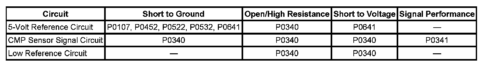

P0340
DTC P0340 or P0341
DTC DESCRIPTORS
DTC P0340
Camshaft Position (CMP) Sensor Circuit
DTC P0341
Camshaft Position (CMP) Sensor Performance
DIAGNOSTIC FAULT INFORMATION

Perform the Diagnostic System Check - Vehicle prior to using this diagnostic procedure. Initial Inspection and Diagnostic Overview
CIRCUIT/SYSTEM DESCRIPTION
The 4X camshaft position (CMP) sensor circuits consist of an engine control module (ECM) supplied 5-volt reference circuit, low reference circuit, and an output signal circuit. The CMP sensor is an internally magnetic biased digital output integrated circuit sensing device. The sensor detects magnetic flux changes of the teeth and slots of a 4-tooth reluctor wheel attached to the camshaft. As each reluctor wheel tooth rotates past the CMP sensor, the resulting change in the magnetic field is used by the sensor electronics to produce a digital output pulse. The sensor returns a digital ON/OFF DC voltage pulse of varying frequency, with two narrow, and two wide output pulses per camshaft revolution that represent an image of the camshaft reluctor wheel. The frequency of the CMP sensor output depends on the velocity of the camshaft. The ECM decodes the narrow and wide tooth pattern to identify camshaft position. This information is then used to sequence the ignition timing and fuel injection events for the engine. The ECM also uses CMP sensor output information to determine the camshaft relative position to the crankshaft, to control the CMP actuator if equipped, and for limp-home operation.
CONDITIONS FOR RUNNING THE DTC
- DTC P0340, P0341, P0641, or P0651 is not set.
- The engine is cranking or running.
- MAF is greater than 3 g/s.
- The DTC runs continuously when the above conditions are met.
CONDITIONS FOR SETTING THE DTC
IMPORTANT: The ECM detects engine movement by sensing the airflow through the MAF sensor, when airflow is greater than 3 g/s, or by sensing crankshaft position (CKP) sensor pulses.
- The ECM detects that the starter is commanded on and the engine has been cranking for more than 4 seconds without a CMP sensor pulse.
- The ECM detects that the engine has started, but did not received a CMP sensor pulse during the first engine revolution.
- The ECM detects that the engine is running, but does not receive a CMP sensor pulse for 800 of 1,000 engine cycles.
P0341
The ECM detects that the engine has started and is running, but receives less than 398 or more than 402 CMP pulses per 100 engine cycles in 800 of 1,000 engine cycles.
ACTION TAKEN WHEN THE DTC SETS
- DTC P0340 and P0341 are Type B DTCs.
- The CMP actuator if equipped is commanded to the parked position.
- The ignition system defaults to a failed CMP sensor limp home mode.
CONDITIONS FOR CLEARING THE DTC
DTC P0340 and P0341 are Type B DTCs.
DIAGNOSTIC AIDS
- With a DTC set, the engine may crank for an extended period of time during start-up.
- This test procedure requires that the vehicle battery has passed a load test and is completely charged. Refer to Battery Inspection/Test. Battery Inspection/Test
CIRCUIT/SYSTEM VERIFICATION
1. Ignition OFF, inspect the engine wiring harness carrying the CMP sensor circuits for the following conditions:
- Close routing of aftermarket electrical equipment
- Close to solenoids, motors, and relays
- Correct any wire harness routing or component placement conditions, if it is determined to be a possible source of electrical interference.
2. Start the engine. Using the Live Plot function on the scan tool, select the CMP sensor parameter. Change the minimum spec to 400 and the maximum spec to 4,000 RPM. Select the CKP sensor parameter. Change the minimum spec to 600, and the maximum spec to 3,300 RPM.
3. Observe the scan tool.
4. Quickly accelerate and release the accelerator pedal several times. Do not accelerate pass 3,200 RPM. The graphed lines on the live plot display should track together across the screen.
- If the vehicle passes the Circuit/System Verification test, operate the vehicle within the Conditions for Running the DTC. You may also operate the vehicle within the conditions that are captured in the Freeze Frame/Failure Records data list.
CIRCUIT/SYSTEM TESTING
P0340
1. Ignition OFF, disconnect the harness connector at the camshaft position (CMP) sensor.
2. Test for less than 1 ohm of resistance on the CMP low reference circuit terminal B and ground.
- If greater than the specified value, test the low reference circuit for an open/high resistance. If the circuit tests normal, replace the ECM.
3. Ignition ON, test for 4.8-5.2 volts between the CMP 5-volt reference circuit terminal A and ground.
- If less than the specified range, test the 5-volt reference circuit for an open/high resistance or short to ground. If the circuit tests normal, replace the ECM.
- If greater than the specified range, test the 5-volt reference circuit for short to voltage. If the circuit tests normal, replace the ECM
4. Ignition ON, test for 4.8-5.2 volts between the CMP signal circuit terminal C and ground.
- If less than the specified range, test the signal circuit for an open/high resistance or short to ground. If the circuit tests normal, replace the ECM.
- If greater than the specified range, test the signal circuit for a short to voltage. If the circuit tests normal, replace the ECM.
5. Ignition OFF, connect a fused jumper wire to the CMP signal circuit terminal C.
6. Ignition ON, momentarily touch the other the other end of the fused jumper wire to the battery negative post. The CMP Active counter parameter should increment.
- If the CMP active counter increments, replace the CMP sensor.
- If the CMP active counter does not increment, replace the ECM.
P0341
1. Ignition OFF, inspect the CMP sensor for correct installation.
- If the CMP sensor is loose, inspect the sensor and the O-ring for damaged, replace as necessary.
2. Inspect the engine for the following conditions:
- Engine oil for debris
- Camshaft reluctor wheel for damage
- The timing chain, timing chain tensioner, and sprockets for wear or damage
- If debris is found in the engine oil, inspect the internal engine components to determine the root cause. Repair or replace any worn or damaged components.
COMPONENT TESTING
IMPORTANT: You must perform the Circuit/System Testing before proceeding with Component Testing.
1. Inspect the CMP sensor for correct installation. Remove the CMP sensor from the engine and inspect the sensor O-ring for damage.
- If the sensor is loose, incorrectly installed, or damaged, replace the CMP sensor.
2. Connect the CMP sensor harness connector to the CMP sensor.
3. Ignition ON, engine OFF. Observe the CMP Active counter parameter on the scan tool.
4. Pass a flat steel object across the tip of the sensor repeatedly. The CMP Active counter parameter should increment with each pass of the steel object.
- If the parameter does not increment, replace the CMP sensor.
REPAIR INSTRUCTIONS
Perform the Diagnostic Repair Verification after completing the diagnostic procedure.
- Camshaft Position Sensor Replacement (RPOs LY2/LC9/LY5/LMG) Camshaft Position Sensor Replacement (RPOs LY6/L76/L92)
- Control Module References for ECM replacement, programming, and setup. Verification Tests